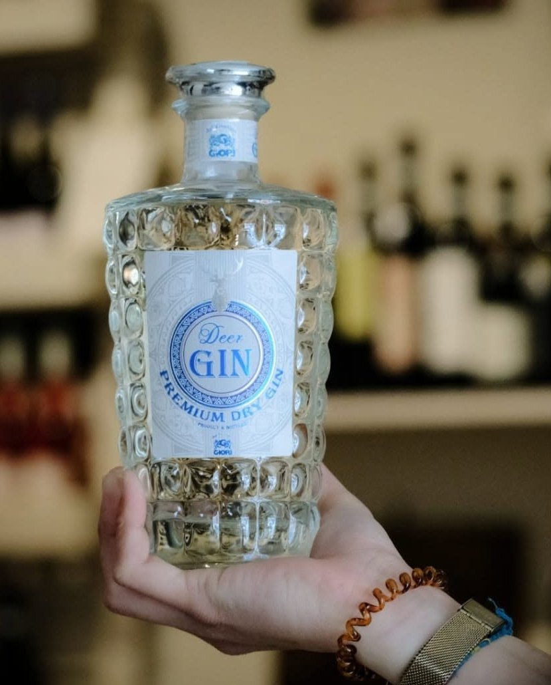

Chi siamo
Enoteca e vineria, dal 2015.
Be Wine apre nel 2015 sul corso di Montesilvano Marina. È un'enoteca dove scegliere una bottiglia da portare a casa e una vineria dove berla con calma, al banco o ai tavoli all'aperto. Sugli scaffali ci sono vini, birre e distillati scelti da tutta Italia: rossi, bianchi e bollicine, ma anche rum, whisky, gin e grappe, e c'è il vino alla spina. Al banco trovate Fabio: se non sapete cosa prendere, vi chiede cosa vi piace e vi consiglia. Si entra per un calice, spesso si resta per la serata.
Scopri i viniDicono di noi
4,7 su Google, 158 recensioni.
-
★★★★★
“Abbiamo trovato professionalità, cordialità e accoglienza. Il proprietario è un ragazzo preparato su tutti i vini che ci ha elencato e sa anche ascoltare i gusti del cliente.”
-
★★★★★
“Un posto davvero piacevole dove gustarsi del buon vino chiacchierando con amici, nella sua semplicità è speciale!”
-
★★★★★
“Se vuoi bere una buona bottiglia di vino a prezzi onesti questo è il posto giusto! Il proprietario se sei indeciso saprà consigliarti nel modo giusto.”